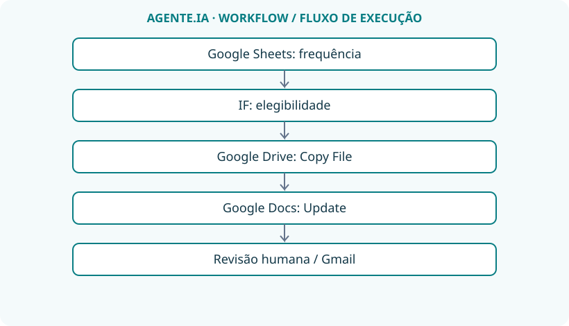

Lab 07 — Google Drive + Docs + Sheets — certificados
Gerar rascunho de certificado a partir de regras explícitas e dados de frequência sintéticos.
Tipo e padrão de workflow
Tipo predominante: Workflow determinístico · Padrão: Condicional.
Elegibilidade por frequência. Fundamentação.
Objetivo
Gerar rascunho de certificado a partir de regras explícitas e dados de frequência sintéticos.
Pré-requisitos: acesso autorizado ao servidor n8n, workflow privado de teste e dados sintéticos. As integrações externas requerem credenciais próprias e autorização administrativa; não altere a instância compartilhada.
Arquitetura

Arquivos e simulação
Workflow JSON importável (simulação) · Entrada JSON · Regra JavaScript · Catálogo CSV · Estoque CSV · Frequência CSV · Fontes sintéticas · Contrato de skill · Casos de teste da coleção · Script de testes locais · Guia de execução
Importe o JSON pelo menu do editor, execute manualmente e examine a saída do último nó. Este arquivo executa somente uma regra de demonstração com dados fictícios. Ele não envia mensagens, não acessa serviços e não contém credenciais. As etapas seguintes são a implementação real guiada.
{
"id": "AL-01",
"nome": "Pessoa Teste",
"frequencia": 80,
"regular": true
}function avaliar(p){return {status:!Number.isFinite(p.frequencia)||p.frequencia<0||p.frequencia>100?'invalido':p.frequencia>=70&&p.regular===true?'apto':'nao_apto'};}
Implementação real passo a passo
- Importe frequencia.csv para Sheets; crie documento modelo com {{NOME}}, {{CURSO}}, {{CARGA}}. Use uma pasta privada de testes no Drive.
- Configure credenciais Sheets, Drive, Docs e Gmail; leia linhas da planilha, valide frequência numérica entre 0 e 100 e aprovação administrativa. Regra didática: mínimo 70%, não substitui regra oficial do curso.
- IF elegível → Drive Copy file para pasta restrita; Docs Update substitui marcadores (ou HTTP Request autenticado para Google Docs batchUpdate, se necessário). Use documentId da cópia, não do modelo.
- Registre documentId e status rascunho na planilha, com aprovação humana separada. Só após aprovação exporte PDF e envie para e-mail de teste. Não compartilhe a pasta publicamente.
- Reexecute uma linha já processada; reutilize documentId, não crie cópias sem necessidade.
Configuração dos nós no editor
Modelo com {{NOME}}, {{CURSO}}, {{CARGA}}. A regra de 70% é didática. Se recurso de exportação não estiver presente no nó, consultar API Drive files.export com OAuth.
| Nó | Parâmetros e mapeamento | Saída esperada |
|---|---|---|
| Google Sheets | Get Row(s); frequência | Linha participante |
| IF | regular=true e frequência >= 70 e <=100 | Elegibilidade |
| Google Drive | Copy file; modelo autorizado | ID da cópia |
| Google Docs / HTTP Request | Update ou batchUpdate replaceAllText; ID da cópia | Marcadores substituídos |
| Human review / Wait | Revisor autorizado; versão do documento | Aprovação |
| Google Drive / Gmail | Export PDF e envio após aprovação | PDF e estado |
Execução e evidências
- Duplique o fluxo de simulação; monte os nós na ordem do diagrama e da tabela. Guarde credenciais no editor, não no código.
- Execute os nós individualmente, confira o JSON de entrada e saída e depois execute o fluxo completo em ambiente de teste.
- Registre em tabela entrada, resultado esperado, observado, duração, versão e evidência. Desative o fluxo e revogue credenciais de teste ao concluir.
| Caso de teste | Critério de aceitação |
|---|---|
| AL-01 80% regular | rascunho elegível |
| AL-02 60% | não gerar |
| reprovado na revisão | não enviar |
Integração com eventos e Webhooks
Receba pedido de certificado por POST; valide elegibilidade e use ID único para evitar envio duplo. Consulte o Lab 05 e o Lab 11.
Testes e avaliação
| Entrada / cenário | Resultado esperado |
|---|---|
| frequência 80, regular | apto |
| frequência 60 | nao_apto |
| frequência ausente | invalido |
Diagnóstico: erro de autenticação → confira credencial e escopo; erro de conectividade → solicite ao administrador verificação de DNS/TLS/rede; erro de mapeamento → inspecione o JSON do nó anterior; quota → interrompa e replaneje. Não tente contornar políticas do serviço.
Entregáveis: export JSON sem credenciais, desenho do fluxo, evidências de pelo menos três testes, registro de falhas, avaliação de risco e explicação de quando não usar IA. Rubrica: configuração 2, funcionamento 3, testes 2, segurança 2, reflexão 1.